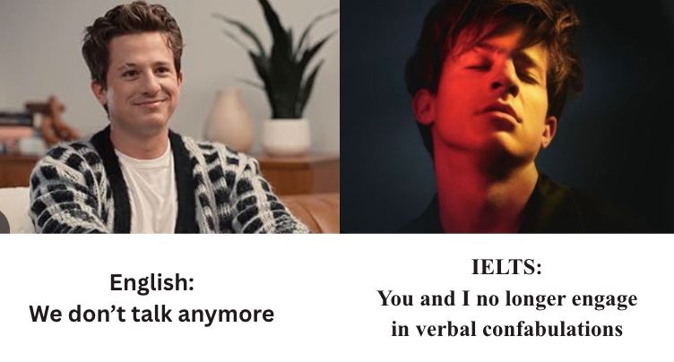

Let me start with a confession: I never actually took the real IELTS exam. After months of preparation and mock tests, I decided not to pursue UK/US schools after all. But I did take the mock exam—and scored an 8 in Speaking.
Here's the thing: I'm Malaysian. Mandarin is my mother tongue. And like many Malaysians, my English comes with a distinct accent—that rhythmic, melodic quality shaped by Southern Chinese dialects like Hokkien, Cantonese, Hakka, and the Malay language.
For years, I was terrified of speaking English in formal settings. I avoided class presentations. I dreaded interviews. And when I decided to apply to Cambridge, I knew I needed at least a 7.5 overall—which meant compensating for my weaker writing score with a strong Speaking result.
I needed an 8.
Whenever I spoke English, I heard that "Malaysian/Singaporean accent" in my head. You know the one—the "lah" that slips out, the rising intonation at the end of sentences, the slightly clipped consonants. I was convinced I sounded "wrong" or "less intelligent."
Sound familiar? If you're reading this and cringing, you're not alone.

IELTS MemeHere's a game‑changer: you don't need to sound like a BBC newsreader. You just need to be understood.
I discovered this through communication mentor Vinh Giang from Singapore. Their tip changed everything: emphasize your words, speak slower, and have a clear structure in your head before you speak.
Suddenly, I wasn't thinking about "fixing" my accent anymore. I was thinking about:
The result? I sounded more confident. More articulate. And my accent? It was still there—but it was clearer. And that's all that matters.
If you have at least two months before your test, this is my secret weapon: shadowing.
Every morning, while walking on my treadmill, I would put on BBC News and repeat what the reporters said—in real-time. I'd imitate their rhythm, their emphasis, their pauses. I did this for at least 60 days.
It's not about "erasing" your accent—it's about training your mouth and ear to adapt.
After two months, my pronunciation was noticeably clearer, and my confidence had skyrocketed.
Here's the most important thing I learned: IELTS does not penalize you for having an accent.
English is a global language. The test is designed for everyone—British, American, Australian, Malaysian, Indian, Nigerian—and examiners are trained to accept any regional accent, as long as it doesn't interfere with understanding.
I remember repeating this to myself like a mantra: "I don't need to sound like a native speaker. I just need to be understood."
During my mock exam, I was nervous. But I remembered what I had practiced: clear articulation, a slower pace, and a structured approach. I answered each question calmly, knowing exactly what I wanted to say before I said it.
I got an 8.
I was genuinely surprised. I had spent so long worried about my accent—and here I was, scoring well above what I needed.
Here's what I'd tell you: